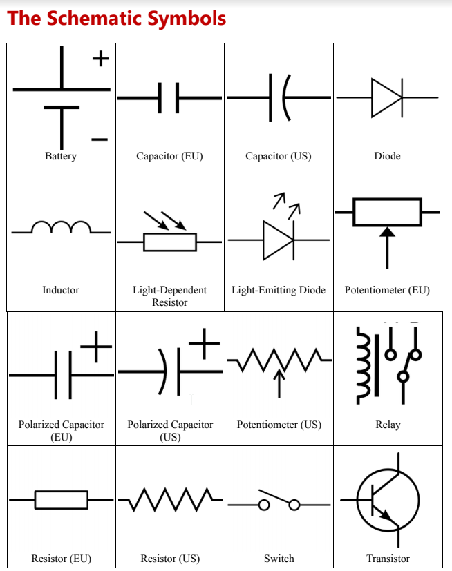
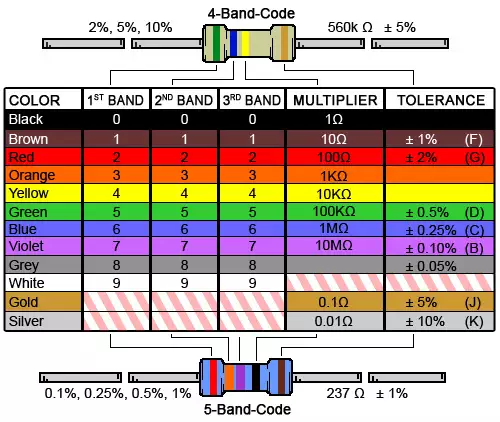

Electronics play an increasingly important role in fabrication and making. If you understand the fundamentals of electronics and can learn to read a schematic, you take your level of making to the next level. It is important to learn what each component does and its role in electronics. You should understand what electricity is, Ohm's Law, components, how to determine resistance, what a multimeter does and then circuits. It will take you time to learn the basics but then you can build upon this foundation for the rest of the the course as you will work with electronics for Arduino, Raspberry Pi, bluetooth, LED and your final project.


Using the Electronics Kit you should spend some time going through the electronics experiments. Take your time as you will need to complete as many experiments as you can in the lab book.
1. Complete at least 20 of the exercises in the book.
2. Take a picture of each completed exercise and list in on your class portfolio.
3. Describe what each component does. Capacitor, transistor, resistor, led, diode, potentiometer, breadboard, multimeter and switch.
4. What is the difference between Voltage, Current and Resistance? What is the the difference between AC and DC?
1. Document what you learned about soldering and the process of soldering the project.
2.Include pictures of your soldering project(s)after you completed it.